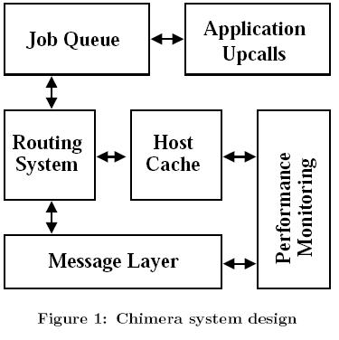

Chimera Architecture & API
1. Chimera Architecture
1.1 Routing System
1.2 Message Layer
1.3 Host Cache
1.4 Performance Monitoring
1.5
Job Queue
1.6 Application up-calls
2 Chimera API
2.1 Basic interface
2.2 Message Up-call
interface
2.3
Routing interface
3 Chimera
Configuration Parameters
1 Chimera Architecture
The Chimera system is divided up into a collection of
components that can be modified independently with little impact on the
system. Figure 1 shows these components and the points of communication
between them. In this section, we will describe briefly the various
components
and how they interact with each other.

1.1 Routing System
The core of the Chimera
library is the routing system, which implements a structured
peer-to-peer overlay similar to Tapestry or Pastry. These algorithms
are
described thoroughly in Tapestry and Pastry,
so we include only a brief overview of them.
A peer's routing information consists of two data
structures: a leaf set and routing table. The leaf set contains the
current peer's immediate neighbors in key space. This leaf set is
augmented by a PRR
style prefix matching routing table. When a message
arrives that needs to be routed, the local node checks its leaf set
first. If the destination falls in the leaf set range, it will be
forwarded to the closest node in the leaf set. Otherwise, it will be
routed
through PRR routing table to the node with the longest
common prefix with the destination.
Peers join the system by
contacting a boot-strap node. After being assigned a key, the node's
join message is routed through the network to the peer that will be
closest in key space to the joining node. The joining peer then
inherits its initial routing information from this peer and all the
nodes in the routing path from the bootstrap to the node that is the
root for the joining node's key. Through the
peer's lifetime, it augments its routing information with peers that it
interacts with or learns about. Leaf sets are strictly constructed,and
must contain the closest known peers in ID space for the system to
work. PRR Routing tables have less stringent requirements, and Chimera
exploits this by updating this table with nodes with the best expected
performance. Performance numbers are acquired through the performance
monitoring subsystem. This system is
implemented using the soft-state mechanisms
used in the Bamboo
system.
The system supports multiple alternate hosts for each PRR routing table
entry. The routing system selects the next hop among the possible
choices based on the link quality and latency of known entries
collected by performance monitoring system.
1.2
Message Layer
Messages exchanged by the Chimera application consist of a message
type, a destination key, and the message payload. The type field is set
either by the routing subsystem or the application. Each message is
handed of to an up-call in the routing system which will do any
processing necessary and
alert the application via up-call if requested. This effectively
implements an event-driven message passing architecture, where each
message is processed by an up-call at the receiving end. The key field
is used only for messages routed through the Chimera routing mesh, and
may be left empty for certain message types. The payload is the part of
the message that is delivered to the application.
Chimera communicates using UDP messages sent over BSD sockets. We
implement a simple, application layer network protocol on top of UDP to
collect feedback on message exchanges. Each network send made by the
Chimera application is assigned a monotonically increasing sequence
number.
This sequence number is perpended to the communication, and
the
receiver responds with an application level acknowledgment. If this
acknowledgment does not arrive within a certain timeout, the send
fails. In this case, the system may choose another valid route for the
message, or it may reissue the send to the same destination. If the
message is acknowledged, the communication time is recorded and sent to
the measurement subsystem. In Chimera
version 0.9 and later we introduced the optional
acknowledgment of each message type based user discretion. Typically
all the Chimera control messages (e.g JOIN) will be acknowledged
in each hop.
The current message system is fairly
primitive, and offers many
opportunities for improvement. For one, timeouts are currently
statically determined, but could be based on measurement information.
1.3
Host Cache
The host cache is used to
maintain information on hosts that might be useful to Chimera in the
future. The cache contains two data structures: a searchable list of
all ChimeraHosts in the cache and an LRU list of chimeraHosts that are
not currently in use by the system. When a host is part of the peer's
leaf set, PRR routing table, or application data structure, it is
locked into the cache. When all references to the host are removed, it
is appended to the end of the free list. When a new host entry is
requested, the host looks for it in the cache. If it is found, it is
removed from the free list if necessary and returned. Otherwise, a new
entry is created. If the cache exceeds its maximum size, the first item
is removed from the free list and replaced. Otherwise, a new item is
allocated. The cache is allowed to grow past its maximum size if
necessary, but it will try not to.
The ChimeraHost entries store both basic host information
(name, address, key, port) as well as auxiliary performance
information. The main purpose of the cache is to maintain this
information even if the host is no longer actively being used. A host
that frequently communicates with a given peer will
likely have an entry in the cache. If another host
fails and the peer needs a new routing entry, it then has a collection
of hosts with known expected performance.
The cache is complete as is, but it identifies hosts by
name and port only. It would be more powerful if it was capable of
searching for hosts based on key.
1.4 Performance Monitoring
The performance monitoring component is responsible for
collecting and reporting data on network conditions. This subsystem
receives data from the message layer regarding communication times and
packet loss. It then uses this information to update the host cache
entry regarding the expected
performance of link to that host. Other components that access the host
entry can then use this information to make decisions based on the
expected performance of communication with a given host.
Currently, latency is determined using an exponential average of all
communication times seen. The current function gives 10% weight to the
last measurement and 90% weight to the measurement history (m(n+1) =
(0:9 * m(n)) + (0:1 * m)). The loss ratio is computed using the
percentage of failed communications. These prediction mechanisms are
very simple and
inaccurate, and in particular exponential averages produce a highly
varying prediction. There are more effective, but also more complex,
methods of predicting network performance.
The performance monitoring subsystem also records and average the last
SUCCESS_WINDOW send attempts to every node. Using this statistics
Chimera routing sub-system can differentiate between good and poor link
quality in addition to network latency.
1.5
Job Queue
In order to limit the number of threads that a program
generates and reduce the cost of thread creation, Chimera creates
limited number of threads during the initialization phase. All these
threads begin as inactive, waiting for jobs to be submitted to the job
queue. As jobs are submitted to the pool, these threads wake up and
begin to process the job requests. If the number of jobs exceeds the
number of threads, they are put in a backlog and are processed in
first-come, first-served order.
It might be desirable to process jobs in a different order than simple
FCFS. In particular, it might become necessary to processes Chimera
routing messages with a higher priority than application messages. It
might also be simple to profile different job types and process them
using an approximate shortest job first schedule. However, until there
appears to be a need for these improvements, they will not be
implemented.
1.6 Application up-calls
Application up-calls are the method through which the Chimera
system interacts with the application built on top of it. In response
to certain events, such as message delivery, route requests, and leaf
set changes, the Chimera system calls functions provided by the user.
The user implements applications using these up-calls as described in
work on developing
a common API for these types of systems. These up-calls are
described more completely in "Chimera API" section.
2 Chimera API
One
of our goals in this project was to provide a flexible API that
decouples the user application from the underlying peer-to-peer routing
and lookup system. The Chimera API follows the syntax defined in "Towards a
Common API for Structured Peer-to-Peer Overlays". Use of this API
eases substitution of underlying routing with minimum effort and
facilitates user level application testing based on different routings.
The Chimera interface consists of two main parts: the routing state
access and the message up-call interface. The routing state access
interface allows an application to directly access to routing state
information. These calls can be used to access routing information and
make application level routing decisions. The message up-call system
interfaces with the application based on the events in routing layer.
Before going in to the detail of the core API, we explain the basic
interfaces that are necessary to build an application on top of Chimera
in section 2.1. We will describe the message up-call interfaces and
routing state access in detail in sections 2.2 and 2.3.
2.1 Basic interface
The basic interface includes functions for initiating Chimera
overlay, joining to the system, assigning key to the node, and creating
ChimeraHost based on the name and IP of the node. In addition to basic
interface in this section we introduce some of the other functions that
can be used by developers for creating key, key conversion and host
serialization.
ChimeraState* chimera_init(int port)
chimera_init
initiates the chimera overlay. This function initiate Chimera routing
system, Job queue, host cash, and message layer. The port will
remain open as long as the node is up and will be used for receiving
messages from the overlay. It returns the Chimera_state pointer
that contains states of all different chimera modules.
void
chimera_join(ChimeraState*
state, ChimeraHost
*bootstrap)
will
sends the join message to the network that bootstrap is part of. If the
bootstrap is NULL calling node is the first node in the network and it
will start an overlay.
void
chimera_setkey(ChimeraState*
state, Key key)
Optional mechanism that allows to over-write the host's key generated
by Chimera by key. Note
that Chimera uses 160bits size key that is the SHA1 hash of the string
"name:port" which name is the computer name and port is the port that
Chimera is running on. If you decided to use this function to provide
your own key, make sure that the provided key is 160bits long. In other
words, if your application uses smaller key size, when converting to
the Key structure make sure that you pad your key's string
representation with 0's before conversion. look at str_to_key and
key_to_str functions to convert string to Key structure or vise versa.
void
chimera_register(ChimeraState*
state, int type, int ack)
chimera_register
registers an integers message type to be routed by the chimera
routing layer. Message types < 10 are reserved for Chimera internal
messaging. Applications can define message types to be routed by
messaging system. The ack argument defines the message layer action,
whether this message type should be acknowledged or not by the
recipient. In future versions we will provide function pointer
to be associated with each message type.
void
chimera_send(ChimeraState*
state, Key key, int type,
int len, char *data)
Route a message of type to key containing size bytes of data.
This will send data through the Chimera system and deliver it to the
host closest to the key.
ChimeraHost
*host_get(ChimeraState*
state, char *hn, int port)
Returns a ChimeraHost structure entry for the given host name,
hn, and port. host_get check the host cash first for the requested
entry and if it can not find it there, it allocates memory for it. Note
that if the host is not in the cache and created, its key will be 0.
void
host_release(ChimeraState*
state, ChimeraHost *host)
Releases a host from the cache, declaring that the memory could be
freed any time. Each host_get should be eventually be followed by a
call to host_release.
void
host_encode(char *s, int len, ChimeraHost *host)
Encodes the host into a string, putting it in s, which has len
bytes in it. The encoding format is as:
"host->key:host->name:host->port"
ChimeraHost
*host_decode(ChimeraState*
state, char *s)
Decodes
the encoded string into a ChimeraHost structure. This acts as a
host_get, and should be followed eventually by a host_release.
void
key_makehash(void *logs, Key *hashed, char *s)
Assigns SHA1 hash of the string s to Key hashed. Chimera uses
hash of "name:port" as key. logs is
a pointer to global logging system, which included in ChimeraState
structure and initializes by chimera_init(..).
void
key_to_str(char *str, Key k)
Converts Key structure to 40bytes long string representation of the Key
k.
void
str_to_key(char *str, Key *k)
Converts 40 bytes string representation of the key in hex to Key
structure. When using this function make sure that your string is at
least 40bytes long if not left-pad it with 0's.
2.2 Message Up-call
interface
All the up-call functions take a
function pointer as their only argument. This variable points to a
function provided by the application that is declared as described.
This system allows the user to respond to events that occur in the
routing layer. They also allow the applications to make changes to some
of the decisions made by Chimera. There are three message up-calls, and
they are described here.
typedef void
(*chimera_update_upcall_t)(Key *key, ChimeraHost *host, int joined)
void chimera
update(chimera_update_upcall_t func)
The update up-call function is called when a host with a given
key
leaves or joins local node's leaf set. The joined integer is 0 if the
node leaves the leaf set and 1 if it joins the leaf set.
typedef
void (*chimera_update_upcall_t)(Key **key,
Message **msg, ChimeraHost
**host)
void chimera
forward(chimera_update_upcall_t func)
The forward up-call informs application that routing layer is
about to
forward a message msg towards the destination key via a host. This
up-call allows the application to modify any of the parameters to
override the routing decisions made by the Chimera routing layer. This
allows the application to change the next hope, the message, or the
destination key.
typedef void
(*chimera_update_upcall_t)(Key *key,
Message *msg)
void chimera
deliver(chimera_update_upcall_t func)
This up-call occurs when the current node receives a message msg
destined for a key that is responsible for. This up-call indicates that
the message has reached its final destination.
2.3 Routing interface
This API allows the application to access routing state and pass down
application routing preferences. Application layer feedback to the
routing layer provides the application with the flexibility to enforce
its policy on the underlying peer-to-peer routing and lookup system
without needing to modify the routing mechanism.
ChimeraHost
**route_lookup(ChimeraState*
state, Key key, int
count, int is_safe)
This call returns an
array of count
(or as many as available in routing table) ChimeraHost
structures that represent acceptable next
hops on a route toward a key. This version of Chimera ignores is_safe.We
keep it in the syntax for future compatibility. If there is no hop
closer than the local host, and the message has reached its
destination, this function returns NULL.
void
chimera_route(ChimeraState*
state, Key *key, Message
*msg, ChimeraHost *hint)
The chimera_route
function will send a message msg
through the Chimera routing layer to the destination key.
If the hint option is not NULL, the system will use the provided host
as its next hop. The hint variable is ignored in this version. This
call will cause either a chimera_deliver or a chimera_forward up-call,
described in section 2.2. This will eventually route the message to the
key root in the existing overlay.
ChimeraHost
**route_neighbors(ChimeraState*
state, int count)
This call will return an array of the count closest nodes in the
leaf set of the local node. The returned array is NULL terminated, so
that if there are not enough hosts in the leaf set to service the
request the array will be terminated early.
3 Chimera
Configuration Parameters
Currently different configuration
parameters in Chimera are scattered through out the related source
files. We aim to gather them all in a configuration file for the next
version of the Chimera. Here we explain some of the more important
configuration parameters.
- LEAFSET_SIZE: defined in route.h, the leaf set size of the node.
This value should be an even number and more preferably a power of 2.
- LEAFSET_CHECK_PERIOD: defined in chimera.c, is an interval
(in seconds) that members of leaf set are checked to see if they are
alive or not.
- GRACEPERIOD: defined in chimera.c, is the time in seconds that
has to be elapsed before a node can be accepted to the network again
after last send to it failed. This parameter is very primitive way to
reduce churn in the network.
- NETWORK_PACK_SIZE: defined in network.h, is the current maximum
allowed application layer message size. This parameter is 65536.
- MAX_ENTRY: defined in route.h, indicates the maximum number of
hosts in each routing table entry. The value is set to 3 by default.
- SUCCESS_WINDOW: defined in host.h, is the history of the last
number of SUCCESS_WINDOW message_send attempts to each node and used to
determine the link quality by routing sub-system. This value is set to
20.
- GOOD_LINK: defined in host.h, determinates the
good network link quality based on the average of the last
SUCCESS_WINDOW message_send attempts. This value is set to 0.8.
- BAD_LINK: defined in host.h, determinates the
poor network link quality
based on the average of the last SUCCESS_WINDOW message_send attempts.
This value is set to 0.3.
Rama Alebouyeh

Last updated 02/16/06